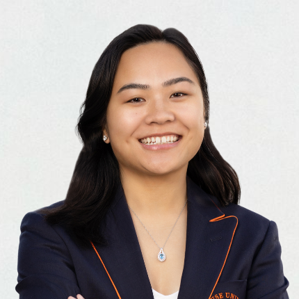

My Resume

Summary
I am a software engineer building generative AI applications. My background includes
web development, project management, and marketing management. I am driven to
actively improve professionally through learning courses, reading, and personal projects.
Education
- BS Information Management & Technology - Syracuse University
Work Experience
Scrum Master - Synchrony
06/2022 - 08/2022
- Facilitated scrum ceremonies including daily standup, sprint planning, and sprint retrospective for 20 cross-functional team members
- Collaborated with 4 interns to strategize and recommend a scalable solution that efficiently tracks resources of 6 Agile Release Trains by compiling data of over 400 employees in Excel, meeting with release train engineers, and investigating an automated workflow
- Successfully completed a data cleansing project in Excel within a tight deadline. Reconciled 100+ users by reviewing daily reports and submitting 24 requests. Reduced data errors by 30% and communicated daily with key stakeholders to provide updates and address any concerns
- Introduced eazyBI (Jira plug-in) to leadership by creating and presenting 8 reports and 2 dashboards that highlighted valuable performance metrics such as sprint velocity, sprint burndown, and number of issue types completed per feature. Documented a beginner’s guide for future implementation
- Set up meetings to consult with the PM and PO to ensure 100% accuracy in the transfer of features from one Jira board to a new one
- Developed a capacity plan for the next program increment by accounting for PTO and checking in with 20 team members
Project Assistant - Syracuse University, Office of Alumni Engagement
06/2021 - 12/2021
- Executed 50+ projects to support 7 directors with alumni events, outreach, and social media
- Created and proofread dozens of internal documents, schedules, PowerPoints, and Excel sheets for weekly program planning
- Engaged with 100+ alumni per week by assisting all in-person visitors, answering phone calls, and maintaining email communications
Social Media Marketing Manager - PostNet Syracuse
01/2021 - 05/2021
- Facilitated weekly reviews with 12 interns, provided feedback on 70+ pieces of content, and tracked performance analytics weekly
- Conceptualized, produced, and published 7 video tutorials demonstrating how to create social media content using Canva
- Research, compile, and catalog 200+ hashtags, over 400 quotes, and over 90 photos with the goal of boosting user engagement
Cybersecurity Teaching Assistant - Syracuse University
07/2020 - 08/2020
- Collaborated with a group of 7 teaching assistants and the course professor to plan, prepare, revise, and test over 10 lab activities relating to encryption, cryptography, ethical hacking, and social engineering
- Organized and coordinated a 3-hour cybersecurity hackathon with 6 sets of 3-4 injects (tasks) for the 48 students to complete
Skills
- Artificial Intelligence 🤖
- Microsoft Azure AI services
- Azure OpenAI
- Azure AI Search
- Azure AI Bot Service
- Document Intelligence
- Language
- OpenAI
- Hugging Face
- Vector databases
- Machine Learning 🧠
- Python
- Retrival augmented generation
- Prompt engineering
- Fine-tuning
- Web Development 💻
- HTML, CSS, JavaScript
- Express.js
- jQuery
- UI/UX Design 👩🏻💻
- Figma
- Wireframing
- Prototyping
- RPA 🔄
- UiPath
- Power Automate
- Azure Logic Apps
- Project Management 🤝🏼
- Jira
- Agile Methodologies
- Scrum
- Other 🤓
- Product Management
- Data Analytics
- Communication
- Adaptability
- Cross-functional collaboration
- Problem-solving
Achievements
- Honors thesis: Fitness Influencers Takeover TikTok
- Dean's List every semester of college - Syracuse University
- Invest in Success Scholar - Syracuse University
- La Salle Medal - High school
- Keuka College Book Award - High school
Other